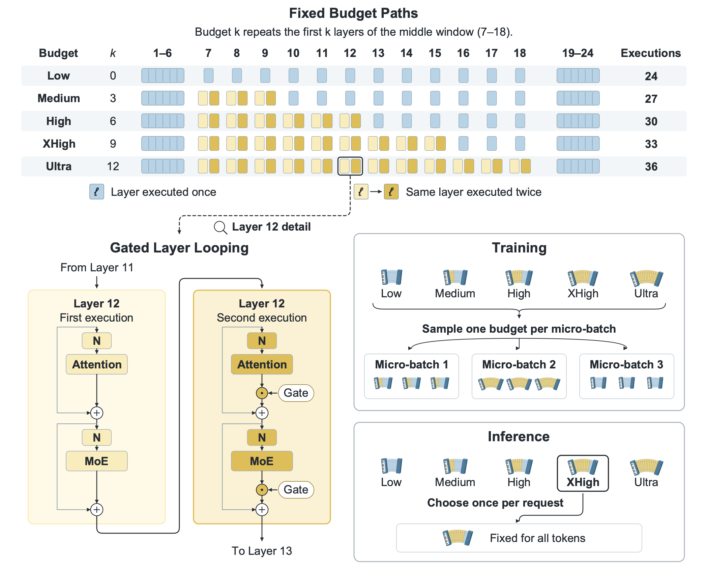
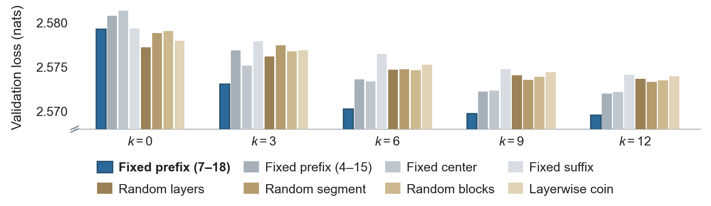
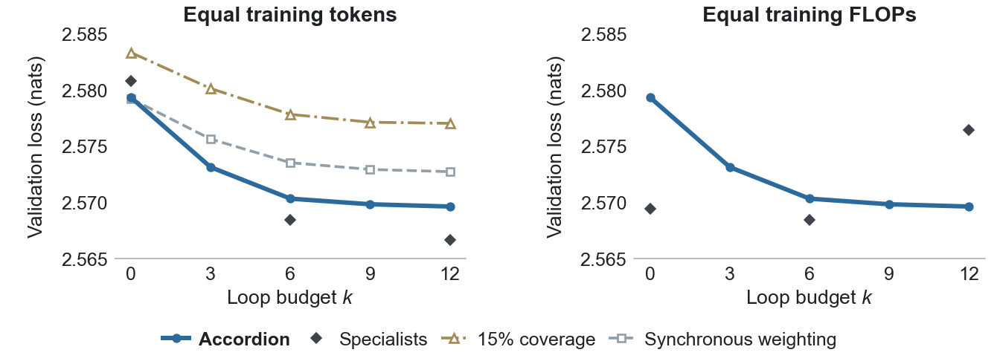
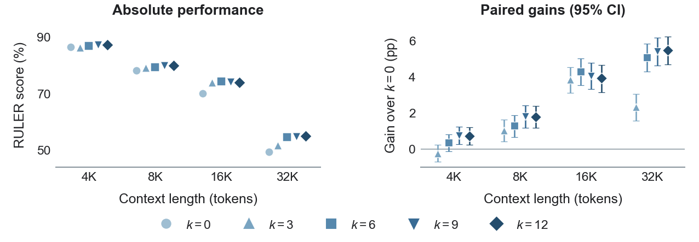
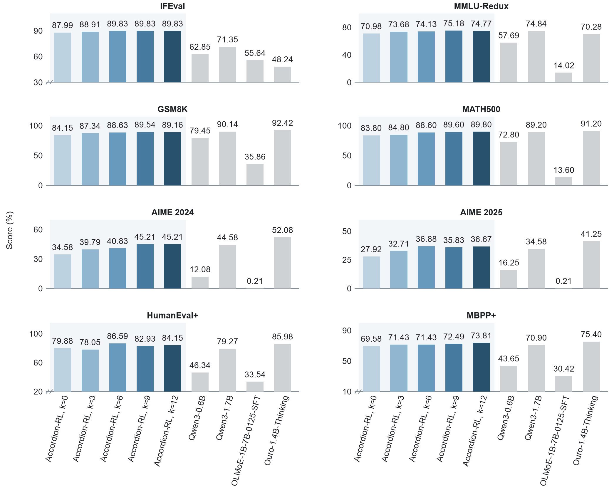
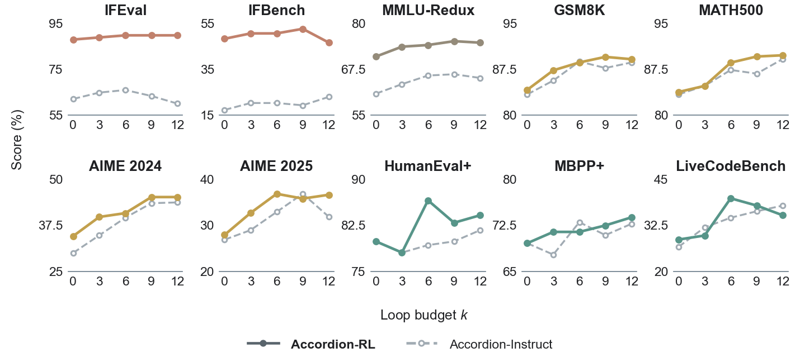

Abstract
Large language models serve applications with diverse inference budgets, but training and maintaining separate models for each budget incurs substantial costs. Recent Looped Transformers enable flexible inference computation through parameter reuse, but maintaining strong performance across different inference budgets remains an open challenge. We introduce Accordion, a mixture-of-experts-based model that supports five inference budgets through fixed-prefix layer looping. Each budget follows a pre-defined execution path, while the minimum budget retains the unlooped model. Joint pretraining samples one budget per micro-batch and optimizes its next-token prediction loss without additional cross-budget consistency objectives. We further preserve these inference budgets through supervised fine-tuning and reinforcement learning, where parameter-group merging and budget-matched multi-teacher on-policy distillation integrate three domain experts into one model. After 3.6T tokens of pretraining, increasing inference depth improves Accordion-6B-A0.5B's average performance across 37 tasks by 3.01 percentage points, with the middle budget capturing 89% of this gain using half as many additional layer executions. The final model surpasses each domain expert on its corresponding task-and-budget average, while achieving strong instruction-following performance across all budgets and retaining depth-dependent gains in mathematical reasoning and code generation.
Method
Accordion adjusts inference depth by repeating a fixed prefix of its middle layers in place, preserving the original layer order.

Why a fixed prefix
Layer selection
The fixed prefix yields the lowest validation loss across all looped budgets.

Comparison with specialists
Accordion closely matches budget-specific specialists.

Pretraining results
Comparison with public models
Additional inference depth improves Accordion-Base performance across most evaluated tasks.

Quality versus inference cost
The middle budget captures most of the quality gains with a moderate increase in decoding latency.

Long-context performance
Additional inference depth delivers larger gains on RULER as context length increases.

Post-training results
Comparison with public models
Accordion-RL outperforms the evaluated public models on instruction following.

Depth scaling after RL
Additional depth continues to improve mathematical reasoning and code generation after RL.

Models and code
All four checkpoints keep the five budgets. Inference and evaluation code, including a vLLM plugin, is in Accordion-Loop.
| Model | Stage | Context |
|---|---|---|
| Accordion-6B-A0.5B-Base-8K | Pretraining, mid-training and annealing, 3.6T tokens | 8K |
| Accordion-6B-A0.5B-Base-32K | Base-8K + 50B tokens of long-context training | 32K |
| Accordion-6B-A0.5B-SFT | Base-32K + supervised fine-tuning | 32K |
| Accordion-6B-A0.5B-RL | SFT + domain RL, expert merging and multi-teacher distillation | 32K |
Serve one budget with vLLM (LOOPMOE_K = 0, 3, 6, 9 or 12):
pip install vllm==0.24.0 "git+https://github.com/btzyd/Accordion-Loop#subdirectory=vllm_plugin"
LOOPMOE_K=12 vllm serve btzyd/Accordion-6B-A0.5B-RL --trust-remote-code --dtype bfloat16 --max-model-len 32768BibTeX
@misc{zhang2026accordionelasticdepthinferencefixedprefix,
title={Accordion: Elastic-Depth Inference via Fixed-Prefix Layer Looping},
author={Yudong Zhang and Wei Ding and Kaili Zheng and Yuchen Ding and Zhenyu Zhang},
year={2026},
eprint={2610.32492},
archivePrefix={arXiv},
primaryClass={cs.LG},
url={https://arxiv.org/abs/2610.32492},
}